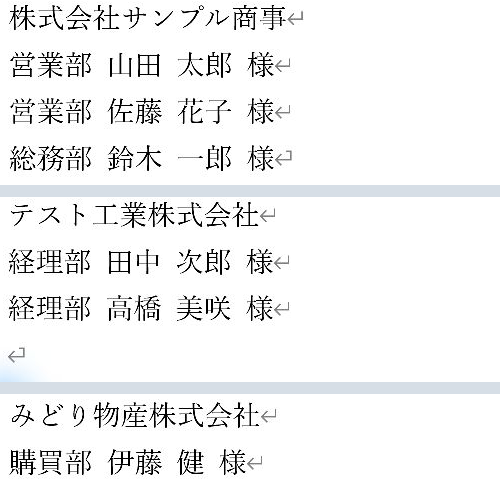
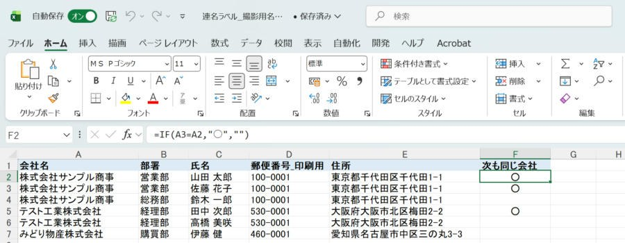

Word差し込み印刷で同じ会社の2人目・3人目を1枚のラベルに入れる方法（連名ラベル）
通常は1社1行の印刷用表で連名を作成。1人1行をまとめるコード方式は応用Lv.5として残しています。
やさしい（Lv.2） ／ コードを使う応用は本文で区別
- 1社1行に整理
- 連名をセル内改行
- ラベルへ挿入
- 人数別に確認
手順の目次を開く
基本の方法：Excelを1社1行にするとコードを使わず作れます
通常は、会社名・郵便番号・住所・連名_印刷用を1社1行にまとめた別シートを用意し、普通のラベル差し込みを使います。名簿を1人1行のまま使ってWord内でまとめる方法は、後半の応用編に残しています。
手順1：連名の印刷用シートを用意する
- 元の担当者名簿を残し、「連名印刷用」という別シートを作ります。
- 1行目に「会社ID」「会社名」「郵便番号_印刷用」「住所1」「住所2」「連名_印刷用」を入力します。
- 1社を1行とし、連名_印刷用のセルへ「営業部 山田 太郎 様」を入力します。
- 同じセルの中でAlt＋Enterを押し、「営業部 佐藤 花子 様」など次の担当者を入力します。人数が少ない会社は、その人数分だけ入力します。
- Excelの「折り返して全体を表示する」で内容を見やすくし、同じ会社の人の漏れや重複がないことを確認して保存します。
会社名が同じ別拠点を誤ってまとめないよう、会社IDや送付先IDで区別します。4人以上も入力できますが、用紙のラベルに全員が収まることは別途確認が必要です。
手順2：ラベルを作り、連名の列を挿入する
- Wordで「差し込み印刷の開始」→「ラベル」を選び、用紙の品番を指定します。
- 「宛先の選択」→「既存のリストを使用」で、作成したExcelと「連名印刷用$」を選びます。
- 左上の1面へ、郵便番号_印刷用、住所1、住所2、会社名、連名_印刷用を「差し込みフィールドの挿入」から配置します。
- 連名_印刷用に「様」を含めた場合は、Word側へ「様」を追加しません。
- 「複数ラベルに反映」を押して全体へコピーします。2面目以降の次のレコード指示は自動で入ります。

手順3：人数が違う会社を確認して完成させる
- 「結果のプレビュー」で、担当者が1名・2名・3名以上の会社を切り替えます。
- 連名セルの改行が表示され、最後の担当者名までラベル内に収まるか確認します。
- 「完了と差し込み」→「個々のドキュメントの編集」→「すべて」→「OK」で完成文書を出します。
- 会社数とラベル枚数を照合し、最後の余り面に固定文字が残っていないか確認します。
- 普通紙で試し印刷し、位置が合ってからラベル用紙へ印刷します。

応用・難易度高（Lv.5）：1人1行の名簿をNEXTIF・SET・IFで連名にまとめる
💡 やりたいこと
取引先に宛名ラベルを作るとき、同じ会社に3人いると、普通の差し込みでは会社名が同じラベルが3枚できます。これを、会社名は1回だけ、その下に2人目・3人目の名前を並べた1枚のラベルにしたい――という方法です。

・同じ会社の人は、最大3人まで同じラベルに並べます（4人目以降は次のラベルに会社名付きで出ます）。
・ラベルの作成・差し込みはWordで行います。名簿には、「次の行も同じ会社か」を表す目印の列を1列だけExcelの式で用意します。
仕組み：ラベルの中で「次の人」へ進むかどうかを決める
ラベルの差し込みでは、2枚目以降の枠の先頭に «Next Record» が入り、1枠に1人ずつ次の人へ進みます（Next Recordの基本）。
連名ラベルでは、1枠の中に「次の人も同じ会社なら、この枠の中で次の人へ進む」という指示を入れます。これがWordの NEXTIF（Next Record If：条件に合うときだけ次のレコードへ進む）です。
| 行 | 中身 | 役割 |
|---|---|---|
| 1行目 | «会社名» | 1人目の会社名 |
| 2行目 | «部署» «氏名» 様 | 1人目の名前 |
| 3行目 | 次も同じ会社なら、次の人へ進んで名前を表示 | 2人目 |
| 4行目 | さらに次も同じ会社なら、次の人へ進んで名前を表示 | 3人目 |
Wordは「次の行の会社名」を先読みできません。そのため、名簿の側に「次の行も同じ会社なら○」という目印を用意し、Wordはその○を見て進むかどうかを決めます。
手順1：名簿を会社名順に並べて、目印の列を作る
- Excelの名簿を会社名で並べ替えて、同じ会社の人が続けて並ぶようにします（「データ」→「並べ替え」）。
- 空いている列の見出しに「次も同じ会社」と入力します（例：F1）。
- F2に次の式を入れ、最後の行までコピーします。
A列が会社名の場合。「1つ下の行の会社名が、この行と同じなら○」を表示します。最後の行は下が空なので空欄になります。

- 保存して、Excelを閉じてからWordでつなぎます。
- ○は、Excelの式で使った文字と、Word側の条件に書く文字を同じ「○」にします（「〇」（漢数字）と混ぜると一致しません）。
目印の○は「Excelで1つ下の行」と比べた結果です。Wordの「アドレス帳の編集」で並べ替えたり、途中の人をフィルターやチェックで外したりすると、○と実際の並びがずれて、別の会社の人が同じラベルに入ることがあります。印刷する人を減らすときは、Excelで対象者だけのシートを作ってから目印の式を入れます（必要な人だけ印刷する2つの方法のパターン2）。
手順2：Wordでラベルを作り、名簿をつなぐ
- Wordの新しい文書で「差し込み文書」→「差し込み印刷の開始」→「ラベル」を選びます。
- 使うラベル用紙の製品番号を選びます。一覧にない場合は「新しいラベル」で寸法を入力します。この記事ではA4の10面（2列×5段）を作りました。
- 「宛先の選択」→「既存のリストを使用」で、手順1のExcelを選び、名簿のシートを選びます。

名簿をつなぐと、2枚目以降のラベルには自動で «Next Record» が入ります。1枚目（左上）のラベルだけを作り、最後に全体へ反映します。
寸法は撮影用の例です。プリンターの印刷できる範囲によって位置がずれる場合があります。紙に印刷して位置を確かめる作業は、この記事では行っていません。
手順3：1枚目のラベルにフィールドを入れる
1行目と2行目（1人目）
「差し込みフィールドの挿入」から、1行目に «会社名»、2行目に «部署» «氏名» を入れ、氏名の後ろに「 様」と入力します。ここは普通のラベルと同じです。
3行目（2人目）：フィールドコードを入力する
3行目には、次のフィールドコードを入れます。「{ }」はキーボードで入力した波かっこでは動きません。Ctrl+F9 を押すと、フィールド用の「{ }」が入ります。
{ SET f1 "{ MERGEFIELD 次も同じ会社 }" }{ NEXTIF { MERGEFIELD 次も同じ会社 } = "○" }{ IF { REF f1 } = "○" "{ MERGEFIELD 部署 } { MERGEFIELD 氏名 } 様" "" }上のコードは入力の見本です。コピーして貼り付けても、波かっこがフィールドにならないため動きません。下の「入力のしかた」の順に入力してください。
| 部分 | 意味 |
|---|---|
SET f1 "…次も同じ会社…" | 今の人（1人目）の「次も同じ会社」の値を、f1 という名前で覚えておく |
NEXTIF 次も同じ会社 = "○" | 今の人の目印が○なら、このラベルの中で次の人（2人目）へ進む。○でなければ進まない |
IF f1 = "○" "部署 氏名 様" "" | 覚えておいた目印が○（＝次の人へ進んだ）ときだけ、2人目の部署・氏名を表示する。○でなければ何も表示しない |
IFを付けているのは、次の人へ進まなかったときに、1人目の名前がもう一度表示されるのを防ぐためです。
4行目（3人目）
3行目と同じ形で、f1 を f2 に変えたものを入れます。2人目の目印が○なら、さらに3人目へ進みます。
{ SET f2 "{ MERGEFIELD 次も同じ会社 }" }{ NEXTIF { MERGEFIELD 次も同じ会社 } = "○" }{ IF { REF f2 } = "○" "{ MERGEFIELD 部署 } { MERGEFIELD 氏名 } 様" "" }入力のしかた（3行目の例）
- 3行目の先頭で Ctrl+F9 を押し、
SET f1 "と入力します。 - 続けて Ctrl+F9 を押し、内側の「{ }」に
MERGEFIELD 次も同じ会社と入力します。 - → を2回押して内側の「{ }」の外に出て、
"を入力します（1回だと、まだ「{ }」の中にいます）。 - → を2回押して外側の「{ }」の外に出ます。
- 同じ要領で NEXTIF と IF を入力します。
=の前後には半角スペースを入れます。
入力中は、フィールドコードが表示された状態になります。Alt+F9 で、コードの表示と結果の表示を切り替えられます。
フィールドコードの全文は、上のコード欄を参照してください。コード欄は文字のまま拡大・コピーできます。
・「"」はすべて半角です。全角の「”」や、自動で変わった「“ ”」では動きません。
・
MERGEFIELD の後ろの列名は、Excelの見出しと同じにします（この例では「次も同じ会社」「部署」「氏名」）。・○は、Excelの式と同じ文字にします。
手順4：全体に反映して、プレビューで確かめる
- 「差し込み文書」タブの「複数ラベルに反映」を押します。1枚目の中身が、先頭に
«Next Record»の付いた形で全ラベルにコピーされます。 - Alt+F9 でコードの表示を戻し、「結果のプレビュー」をオンにします。
- 同じ会社の人が1枚にまとまり、次のラベルが次の会社から始まっているかを確認します（この記事の冒頭の画面）。
手順5：新しい文書に差し込んで確認してから印刷する
- 「完了と差し込み」→「個々のドキュメントの編集」→「すべて」→「OK」。
- 差し込み済みのラベルが新しい文書として開きます。会社ごとにまとまっているかを全ページ確認します。
- 確認できたら、普通紙に1枚印刷して位置を確かめてから、ラベル用紙に印刷します。
撮影に使った例（3社・6人、10面ラベル）では、新しい文書の1ページ目に3枚のラベルが会社ごとに並びました。気づいた点は次の2つです。
- 使わなかったラベルに「様」だけが残る：名簿の人数より枠が多いと、残りの枠には固定の文字「様」だけが表示されます。差し込んだ後の文書で消すか、その枠には印刷しないようにします。
- 最後に白紙のページが付く：ラベルの表の後ろにある空の段落が次のページに送られ、2ページ目が白紙になりました。差し込んだ後の文書で白紙のページを消すか、印刷するページを1ページ目だけにします。
紙への印刷は行っていません。印刷位置は、お使いのプリンターとラベル用紙で確認してください。
4人以上いる会社、ラベルに入りきらないとき
- この記事のコードは3人目まで。4人目は、目印が○のままでも次のラベルに進み、会社名付きで表示されます。
- 4人目まで入れたい場合は、4行目と同じ形で f3 を使った5行目を足します。ただし、ラベルの高さに収まる行数までにします。
- 部署名が長くて1行に入らない場合は、フォントを小さくするか、部署を入れずに氏名だけにします。
4人以上の会社での動きは、この記事の撮影では確認していません。環境により結果が異なる場合があります。
よくあるつまずき
| 症状 | 確認すること |
|---|---|
| 2人目の行に1人目の名前がもう一度出る | 3行目のIFが入っていないか、SETで覚える名前（f1）とIFで見る名前（REF f1）が違っています。 |
| 別の会社の人が同じラベルに入る | Excelで会社名順に並べ替えてから目印の式を入れたか。Word側で並べ替え・フィルター・チェック外しをしていないか。 |
| 同じ会社なのに別のラベルに分かれる | 目印の列が○になっているか。○の文字がExcelとWordで同じか。会社名の表記ゆれ（「株式会社」の有無、全角・半角、空白）がないか。 |
| フィールドが動かず、コードがそのまま表示される | 「{ }」を Ctrl+F9 で入れたか。Alt+F9 で結果の表示に戻したか。 |
| 2人目の行がずっと空になる | NEXTIFとIFの「○」の前後のかぎかっこが半角の「"」になっているか。= の前後に半角スペースがあるか。 |